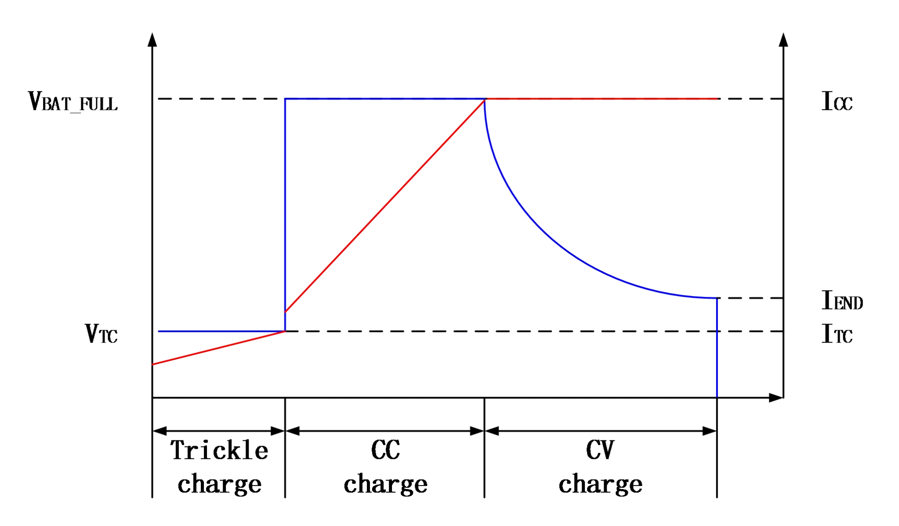
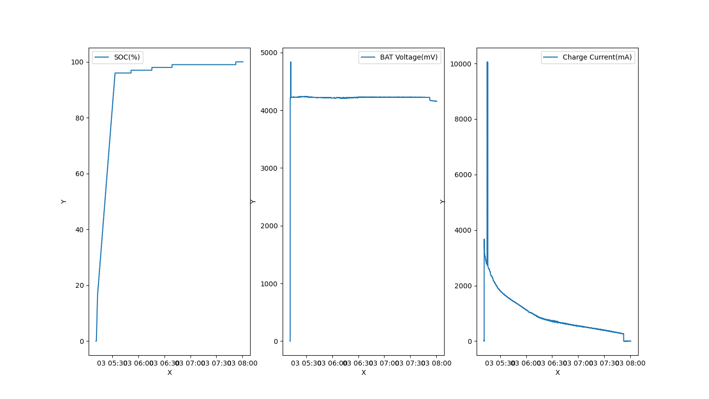
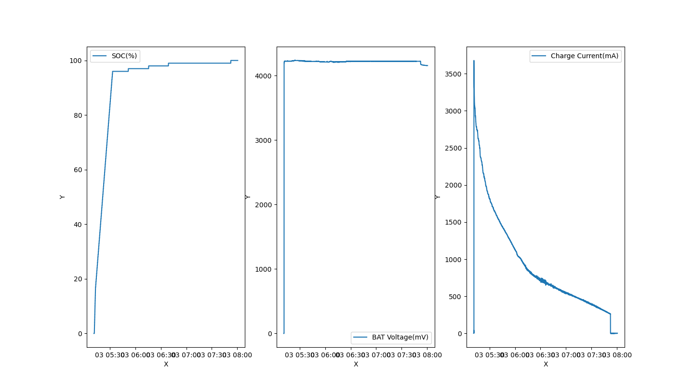

Charge
放电后充电数据，发现只支持恒压阶段
参考文档
简述
充电流程分为如下三个过程：涓流模式、恒流模式、恒压模式。
当电池电压低于 3V 时，充电器处 于涓流模式：
电池电压低于 1.5V 时，其充电电流为 200mA
电池电压处于 1.5V 和 3V 之间时，其充电 电流为 300mA
当电池电压大于 3V 时，充电器进入恒流模式，此时按照设定的目标电流全速充电
当电池电压上升到充电目标电压（比如 4.2V）时，充电器进入恒压模式，此时电流逐渐减小，而电池端电压保持不变
当充电电流减小充电截止电流，即设定值的 10%与 300mA 中最小值时，充电结束
充满后如果电池电压降低到比目标电压低 0.1V，则自动重新开始充电

实际充电数据
0%到100%充电数据
0%到100%充电数据可视化，有几个点采样貌似存在点问题

0%到100%充电数据可视化，删除几个采样问题点后数据图，经测试，无法放电到3V以下，下面实际的数据曲线看其实一直在恒压充电阶段
